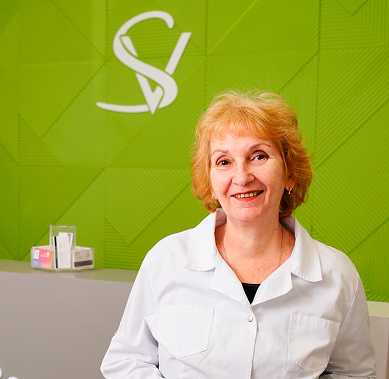

Лікарка уважно вивчила аналізи та УЗД, детально пояснила лікування і відповіла на запитання.

Бондаревич Світлана Майславівна
Лікар-уролог в Одесі. Вища категорія, кандидат психологічних наук, доцент. Член Асоціації урологів України.
39 роківдосвіду
90+наукових праць
900 грнпервинний прийом
Записатися
Що лікує
- Цистит
- Пієлонефрит
- Порушення статевої функції
- Простатит
- Уретрит
- Зниження лібідо
- Аденома простати
- Нетримання сечі
- Фімоз без операції
- Сечокам’яна хвороба
- Нейрогенний сечовий міхур
Освіта і наукова діяльність
90+наукових публікацій
44статті у фахових виданнях
4монографії: 1 власна і 3 спільні
6патентів і авторських свідоцтв
Освіта
- 1982Благовіщенський державний медичний інститут, лікувальна справа
- 1983Інтернатура з хірургії
- 1987Спеціалізація з урології
- 2008Кандидат психологічних наук, загальна психологія
Курси і стажування
- 2008Медична психологія, спеціалізація · Харків
- 2018Психологічний супровід дітей з особливими потребами · 20 год
- 2020Сучасні підходи до психосоматичних розладів · 180 год
- 2020Науково-педагогічне стажування, Польща · 180 год
- 2021Сімейна психотерапія в соматичній практиці
- 2021Психотерапія невротичних і психосоматичних розладів · 183 год
- 2021Тренінг-марафон «Навчання-Якість-Моніторинг», Київ
- 2021Передатестаційний цикл «Урологія», ОНМедУ
- 2022Дистанційне викладання у вишах · 180 год
- 2022Медична психологія · 424 год
Відгуки пацієнтів
Задоволений онлайн-консультацією щодо можливого оперативного втручання.
Лікарка тактовна та приємна у спілкуванні.